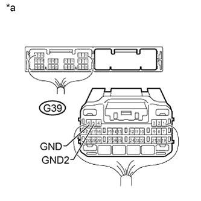

DTC B2286 Runnable Signal Malfunction |
DTC P0335 Crankshaft Position Sensor Circuit Malfunction (NE Signal) |
| DTC Code | DTC Detection Condition | Trouble Area | DTC Output Confirmation Operation |
| B2286 | Mismatch between the engine speed signal from the direct line sent by the ECM and the engine speed signal sent via CAN communication (1-trip detection logic*). |
| Disconnect the cable from the negative (-) battery terminal, wait 30 seconds and reconnect the cable to the negative (-) battery terminal. Wait 20 seconds or more with the engine switch off, and then start the engine. Make sure that the engine speed is 1000 rpm or more for 20 seconds or more after starting the engine. |
| P0335 | Mismatch between the engine speed signal from the direct line sent by the ECM and the engine speed signal sent via CAN communication (1-trip detection logic*). |
| Wait for 10 seconds or more with the engine idling. |
| Vehicle Condition when Malfunction Detected | Fail-safe Function when Malfunction Detected |
When "P0335" is output, the engine cannot be stared or runs rouge.
|
CAN communication is normal and the engine speed signal from the direct line is abnormal: CAN communication is abnormal and the engine speed signal from the direct line is normal: Both CAN communication and the engine speed signal from the direct line are abnormal: |
| DTC | Data List Item | Active Test Item |
| B2286 | Power Source Control
Starting Control
| - |
| P0335 | Power Source Control
Starting Control
| - |
| 1.READ VALUE USING INTELLIGENT TESTER (ENGINE CONDITION, ENGINE SPEED) |
Connect the intelligent tester to the DLC3.
Turn the engine switch on (IG).
Turn the intelligent tester on.
Enter the following menus: Body / Power Source Control or Starting Control / Data List.
According to the display on the intelligent tester, read the Data List.
| Tester Display | Measurement Item/Range | Normal Condition | Diagnostic Note |
| Engine Condition | Condition of engine/Stop or Run | Run: Engine running Stop: Engine stopped | - |
| Tester Display | Measurement Item/Range | Normal Condition | Diagnostic Note |
| Engine Speed | Engine speed/0 to 16383 r/min | Changes according to engine speed | - |
|
| ||||
| OK | ||
| ||
| 2.CHECK HARNESS AND CONNECTOR (BATTERY - POWER MANAGEMENT CONTROL ECU) |
 |
Disconnect the G39 power management control ECU connector.
Measure the voltage according to the value(s) in the table below.
| Tester Connection | Condition | Specified Condition |
| G39-2 (AM21) - Body ground | Always | 9.5 to 14 V |
| G39-1 (AM22) - Body ground |
| *a | Rear view of wire harness connector (to Power Management Control ECU) |
|
| ||||
| OK | |
| 3.CHECK HARNESS AND CONNECTOR (POWER MANAGEMENT CONTROL ECU - BODY GROUND) |
Disconnect the G39 power management control ECU connector.
|  |
Measure the resistance according to the value(s) in the table below.
| Tester Connection | Condition | Specified Condition |
| G39-6 (GND) - Body ground | Always | Below 1 Ω |
| G39-5 (GND2) - Body ground |
| *a | Rear view of wire harness connector (to Power Management Control ECU) |
|
| ||||
| OK | |
| 4.CHECK HARNESS AND CONNECTOR (POWER MANAGEMENT CONTROL ECU - ECM) |
Disconnect the G38 power management control ECU connector.
Disconnect the G45 ECM connector.
Measure the resistance according to the value(s) in the table below.
| Tester Connection | Condition | Specified Condition |
| G38-4 (NE) - G45-35 (NEO) | Always | Below 1 Ω |
| G38-4 (NE) or G45-35 (NEO) - Body ground | Always | 10 kΩ or higher |
|
| ||||
| OK | |
| 5.CHECK POWER MANAGEMENT CONTROL ECU |
Reconnect the power management control ECU connectors.
| *a | Component with harness connected (Power Management Control ECU) | - | - |
Check the engine speed input signal waveform at the terminal of the power management control ECU.
| Tester Connection | Condition | Specified Condition |
| G38-4 (NE) - Body ground | Engine stopped | No pulse generated |
| Engine running | Pulse generated |
|
| ||||
| OK | ||
| ||